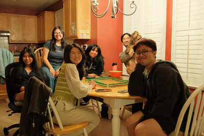
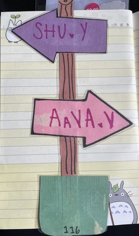

In the article on "Understanding Game Design Principles", the author goes over the basic principles that game developers use to achieve a successful game design. To set motivation for the player, there should be a set of goals and objectives to set the purpose. Having core mechanics sets constraints for the users, while not having too many
mechanics to learn to set motivations. Having these mechanics should also be familiar to the users, or doesn't require much time to learn them. For example, controls of the game can be learned through simple directions such as arrows going left or right. To keep players engaged, having a level of difficulty can motivate the users to stay with the
game. While also keeping in mind having an impossible level can have the user leave, so by giving a balance of both understanding and a good level of difficulty can be motivating.
Another aspect to keep the user engaged is by having rewards and feedback, by letting the user know if they have successfully completed the level or if they have clicked the
wrong button can be helpful when users interact with the interface. Rewards can motivate them by giving system points such as competing with others to win the game. I think this particular principle would really help with my design project, such as having a screen that says "congratulations" when a certain player wins. When
designing a game, playtesting is important from the initial stage and throughout the production. This can be helpful to know if the game is engaging by doing user testing and identifying areas of improvement. Lastly, sound design is important not only to immerse users, but also provide feedback when the user interacts.
Peer’s image visual thinking analysis
On the surface level, the first image seems like a group of friends hanging out playing Majong. Everyone seems like they are having a great time as they all look happy. The deeper story of this picture may hold meaningful relationships
of friends in college as they may be far away from home and this is their second home/ family. The most interesting aspect of the image is the nostalgic tone and the expressions of the people with
genuine smiles. One suggestion I would recommend to make the images go beyond the ordinary can be telling the story of the image by zooming in the mahjong or having a cover on top of the image to reveal it by clicking on it.

Derick Lapurga, 2026
Personal image visual thinking analysis
One of the images that I'm most excited about is the room name tag during my first year dorming experience. Even though it seems like a regular name tag, there is a deeper story behind it. I was assigned with a random roommate with the fear that I wouldn't get along with them. We both came from similar experiences as a first generation college student. Until this day, she is still my roommate! We both see each other as close friends and families.
This particular image relates to the topic of my archive collection of my scrap book journal memories as I collect pieces in one journal that I can share my experiences with others. It also implies how my experiences shape the person I am today through meaningful relationships. To make this image more compelling, I'm considering cropping the image out and putting it in a blank canvas with the other images that the user can interact with.

Shu Yin Yu, 2023
Visual Thinking Strategies Research
The article covers the importance of analyzing images closely through asking questions and making connections. This relates to reading texts by actively engaging rather
than passively reading the information. One of my personal experiences was during high school, I did a "See, think, and wonder" exercise during a social studies class.
Our teacher put up several images on the board before introducing the lesson that helped us critically think about the topic before diving in the lesson.
I personally think it was both fun and engaging while preparing us to get excited about the topic we are learning. Analyzing an image often brings many perspectives as everyone comes from different backgrounds
and experiences that can bring up rich conversations. (Article)
Website Evaluation
A website I explored is called Explore Primland which is an interactive map feature that includes details of residences properties. The strengths of this website includes the detail of the map and the overlay makes the
overall user experience immersive as well. The dropdown menu is also useful to explore different maps. The drawbacks of this website include large memory usage that makes the interaction of
some features glitchy and may take longer for some users to load based on their networks. While the interaction makes it engaging for the user to learn more about the property, there's not a search bar or a
filter section that allows the users to look for a certain property. The website still overall communicates a visual story telling through information in overlays, music, and animation.
(Website)
Best Practices for Modals / Overlays / Dialog Windows
The article goes over when modals are appropriate to use in UI design. It is useful to save the screen without having the user go to another page.
However, it can provide a negative user experience when it's not used appropriately. Such instances include having a pop up modal when a user first enters the website.
This can easily annoy them and make them click away. Users are more likely to do something when they do the action themselves such as clicking a button on the page. Modals can be used to
obtain additional information from the users or provide information for users along with the parent page. The article further discusses accessibility in a modal by making information visible and clear to the user. Structuring of information and the modal itself should also be clear
and accessible. When using a modal, designers should ask themselves when it's appropriate to use it. They should consider the significance of it and the benefits or harm to the users.
(Article)
Best practices for form design
The article covers the main practices of designing a form that allows for good user experience. This includes the structuring of the form that prevents any confusion for the users and reduces cognitive load.
The tip that specifically caught my interest was the multiple steps as it allows for chunking of information and the progress bar showing how far the form has completed, which encourages users to likely complete the form.
Most of the practices mentioned in the article are common patterns that are used in most online platforms, which people usually follow to allow their form to work smoothly for their users.
Some of the practices can be applied to some scenarios but not all. For example, the practice of minimizing dropdown menus can be based on
when there may not be enough space in the page or having a dropdown menu of yes and no is also commonly used.
(Article)
Website form with best practices
One of the website forms that demonstrates the best practices is the Spotify sign in interface.
Although it is not necessarily a form, the step by step login phase reduces the users’ cognitive load. (Link)